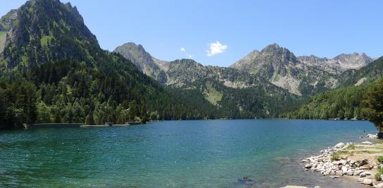

El llac de Sant Maurici és el més emblemàtic dels gairebé 200 que hi ha al Parc Nacional d'Aigüestortes, un espai natural protegit Aquest és l'entorn ideal per passar un dia envoltat de natura, amb fauna i flora de tota mena.
Senderisme, escalada o rutes en bici són algunes de les activitats que pots fer per les muntanyes i boscos que hi ha al parc. Important: està prohibit banyar-se als estanys i rius del Parc Nacional.